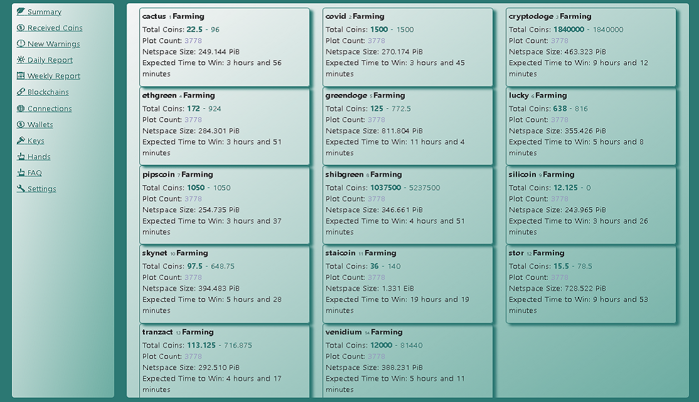
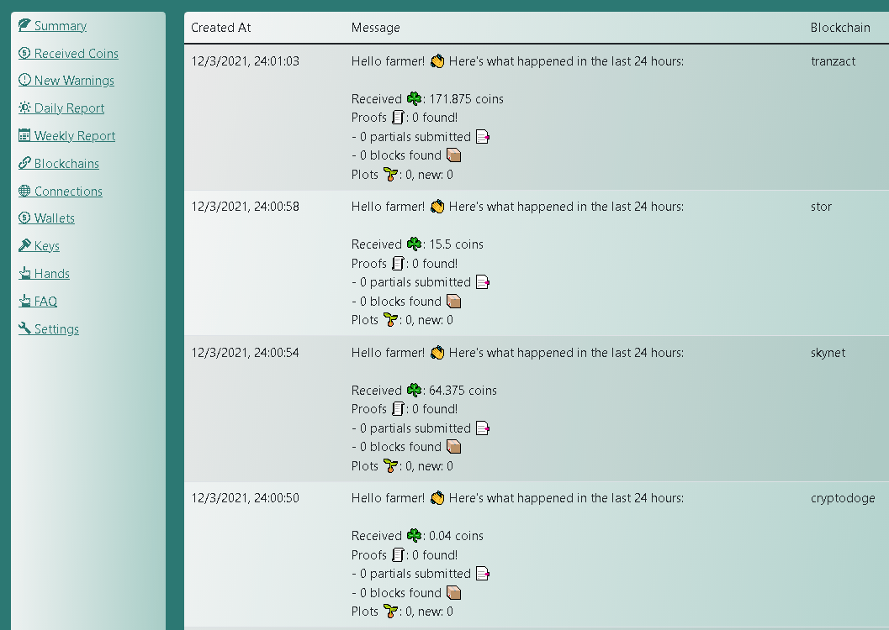

Coctohug - Quản lý khai thác hàng chục nhánh blockchain chia từ trình duyệt web!
- Bản địa hóa tốt với sự hỗ trợ của hàng chục ngôn ngữ: English, العربية, Bulgarian, Catalan, Deutsch, Español, زبان فارسی, Français, Galego, Indonesian, Italiano, 日本語, 한국어, Português do Brasil, limba română, Русский, Serbian, Thai, Tagalog (Filipino), Türkçe, Українська, Vietnamese, 简体中文, 繁體中文
Cài đặt dễ dàng bằng cách sử dụng Bắt đầu nhanh
Tìm kiếm thêm trợ giúp về Website / Github / Discussions / Discord.
Bắt đầu nhanh
Thiết lập chung
Cài đặt nâng cao
Thực hành tốt nhất
Thiết lập Coctohug trên Hệ điều hành Linux
Thiết lập Coctohug trên Windows OS
Thiết lập Coctohug trên Mac OS
Mật khẩu
- Bạn sẽ được nhắc đặt mật khẩu cho các cài đặt bảo mật, khi bạn truy cập lần đầu tiên vào WebUI với url http://localhost:12630/
- Các cài đặt bảo mật bao gồm: Ví lạnh, Chuyển tiền xu, Khởi động lại Blockchain Forks, Máy thu hoạch ...
Chìa khóa
- Bạn sẽ được nhắc nhập 24 từ ghi nhớ, khi bạn lần đầu tiên truy cập WebUI với url - điều này chủ yếu dành cho mục đích nông nghiệp
- Hoặc bạn có thể tạo một khóa hoàn toàn mới - điều này chủ yếu dành cho mục đích ví lạnh
Khai thác mỏ
- Sau khi đồng bộ hóa nút hoàn tất, quá trình canh tác sẽ tự động bắt đầu
- Sau đó, bạn sẽ có thể theo dõi trạng thái khai thác bằng nhiều cách khác nhau

Giám sát
- Tab Tóm tắt có thể hiển thị: Tổng số tiền đã khai thác, Số dư tài khoản, Số lô, Quy mô lô, Quy mô không gian mạng và Thời gian dự kiến để giành chiến thắng
- mỗi bảng phân nhánh blockchain trong tab Tóm tắt sẽ có nền màu xanh lá cây nhạt nếu nó đang hoạt động tốt, nếu không nó sẽ có nền màu vàng nhạt
- Bạn cũng có thể kiểm tra chi tiết bằng các tab khác
Phục hồi NFT
Đã tìm thấy khối / Số tiền đã nhận
- Liệt kê tổng số khối được tìm thấy
- Liệt kê tổng số tiền nhận được

Cảnh báo khai thác
- Liệt kê sự cố mạng có thể xảy ra
- Liệt kê các vấn đề có thể xảy ra với signapoint
- Liệt kê sự cố tìm kiếm đĩa có thể xảy ra
- Liệt kê sự cố giảm số lượng lô có thể xảy ra
Báo cáo hàng ngày
- Tóm tắt khối tìm thấy / số tiền nhận được theo ngày
- Tóm tắt cảnh báo khai thác theo ngày

Báo cáo hàng tuần
- Tóm tắt khối tìm thấy / số tiền nhận được theo tuần
- Tổng hợp cảnh báo khai thác theo tuần
Node Sync
- Node sẽ tự động đồng bộ hóa theo mặc định
- Bạn có thể chuyển đến tab Connections hoặc Blockchains để kiểm tra trạng thái chi tiết
- Để tích lũy đồng bộ hóa nút của bạn, https://alltheblocks.net/ cung cấp danh sách các nút và tệp cơ sở dữ liệu (nhấp vào từng chuỗi khối và sau đó bạn có thể tìm thấy chúng ở phần trên cùng bên phải)
Quản lý kết nối
- Liệt kê tất cả các kết nối nút
- Bạn có thể thêm / xóa kết nối trong tab Kết nối

Quản lý ví
- Liệt kê trạng thái ví và số dư tài khoản
- Bạn cũng có thể chuyển tiền trong tab ví

Quản lý tay
- Đây là từng nhân viên phân nhánh blockchain
- Bạn có thể loại bỏ một tay khi bạn không định trang trại nữa
Chuyển tiền
- Chuyển đến tab ví và nhập mật khẩu an toàn của bạn để chuyển tiền
Ví lạnh
- Chuyển đến tab cài đặt với mật khẩu an toàn của bạn
- Xuất tài khoản Ví lạnh
1. Chuẩn bị một máy mới (khác với máy khai thác)
2. Chuyến thăm https://www.coctohug.xyz và nhấp vào Chế độ Wallet để tạo các thư mục do docker-soạn
3. Thiết lập các thư mục soạn thảo docker [Thiết lập Coctohug trên Hệ điều hành Linux]
4. Trên màn hình khởi chạy WebUI, tạo khóa mới lần này
5. Chờ vài phút để các nhánh blockchain khởi động lại
6. Đi đến từng thư mục và thực thi tập lệnh docker-compose stop && docker-compose up -d
7. Chuyến thăm http://localhost:12630/, và đi tới cài đặt - tab ví lạnh để xuất địa chỉ ví lạnh
8. Xác nhận từng địa chỉ là chính xác theo cách thủ công bằng cách so sánh tệp đã tải xuống với thông tin được hiển thị trên tab Phím
9. Nhận 24 từ dễ nhớ bằng tập lệnh đầu cuối tương tự
docker exec -it coctohug-flora flora keys show --show-mnemonic-seed
docker exec -it coctohug-covid covid keys show --show-mnemonic-seed
docker exec -it coctohug-lucky lucky keys show --show-mnemonic-seed
- Nhập tài khoản ví lạnh
1. Trên máy khai thác của bạn, hãy truy cập cài đặt - tab ví lạnh
2. Nhập tệp json ví lạnh đã tải xuống trước đó
3. Chờ vài phút và chuyển đến tab ví để xem địa chỉ ví lạnh đã được cập nhật hay chưa
4. Lưu ý: chúng tôi khuyên bạn nên sao lưu cấu hình ví của mình trước khi nhập

24 từ dễ nhớ được diễn đạt bằng mật khẩu an toàn
- coctohug-passphrase có thể được sử dụng để ghi nhớ 24 từ dễ nhớ của bạn
- Nó mã hóa các khóa của bạn bằng mật khẩu mà chỉ bạn biết
- Bạn có thể giải mã nó bằng mật khẩu khi thêm các nhánh blockchain mới
Blockchain Forks
- Kiểm tra coctohug github vài ngày một lần
- Các nhánh blockchain mới sẽ sớm được hỗ trợ
Máy gặt
Nâng cấp
- Tập lệnh một dòng
docker-compose stop && docker-compose rm -f && docker-compose pull && docker-compose up -d --force-recreate
- Bạn cũng có thể thực thi các tập lệnh trên theo từng bước
docker-compose stop
docker-compose rm -f
docker-compose pull
docker-compose up -d --force-recreate
- Trong trường hợp xảy ra sự cố db không tương thích, bạn có thể xóa tệp cơ sở dữ liệu hiện có trước khi thực thi tập lệnh bắt đầu do docker-soạn bằng cách
rm ~/.coctohug-web/db/coctohug.sqlite
Ngôn ngữ địa phương
- Ở trên cùng bên phải của WebUI, chọn bất kỳ ngôn ngữ nào bạn thích nhất
- Bạn có thể chuyển sang bất kỳ ngôn ngữ nào khác sau này nếu muốn
yêu cầu phần cứng
- Sau khi được đồng bộ hóa, Bộ xử lý Intel® Core ™ i7 thế hệ thứ 10 sẽ đủ để sử dụng hơn 50 nhánh blockchain
- Tuy nhiên, đối với giai đoạn đồng bộ hóa nút nội bộ, nó thực sự ăn CPU. Vì vậy, chúng tôi khuyên bạn nên thiết lập 5 nhánh blockchain cho mỗi nhóm và bắt đầu nhóm theo nhóm
- Bộ nhớ cần thiết bằng: số lượng nhánh blockchain khai thác nhân 1,8G RAM
- Đĩa thông thường sẽ ổn cho hơn 50 nhánh blockchain
Dự án nguồn mở trên Github
webui
cactus
covid
cryptodoge
ethgreen
flora
greendoge
lucky pipscoin
shibgreen
silicoin
skynet staicoin
stor
tranzact
venidium
Thông báo nhãn hiệu
CHIA NETWORK INC, CHIA ™, CHIA BLOCKCHAIN ™, CHIA PROTOCOL ™, CHIALISP ™ và “Biểu trưng chiếc lá” (bao gồm cả biểu tượng chiếc lá khi nó đề cập hoặc chỉ Chia), là các nhãn hiệu hoặc nhãn hiệu đã đăng ký của Chia Network, Inc. ., một tập đoàn Delaware. * Không có mối liên hệ nào giữa dự án Coctohug này và dự án Mạng Chia chính. *